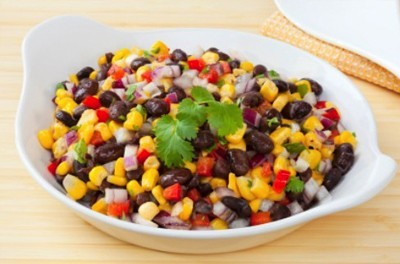

Ingredients:
1 1/2 cups corn kernels (fresh or frozen)
1/3 cup pine nuts
1/4 cup lime juice
2 tablespoons extra-virgin olive oil
1/4 cup chopped fresh cilantro
2 (14.5 ounce) cans black beans, rinsed
2 cups shredded red cabbage
1 large tomato, diced
1/2 cup minced red onion
Directions:
- Place pine nuts in a small dry skillet over medium-low heat and cook, stirring, untilfragrant and lightly browned, 2 to 4
minutes.
- Whisk lime juice, oil, cilantro, salt and pepper in a large bowl. Add the corn, pine nuts, beans, cabbage, tomato and
onion; toss to coat. Refrigerate until ready to serve.
- Freshly ground pepper and salt to taste just before serving